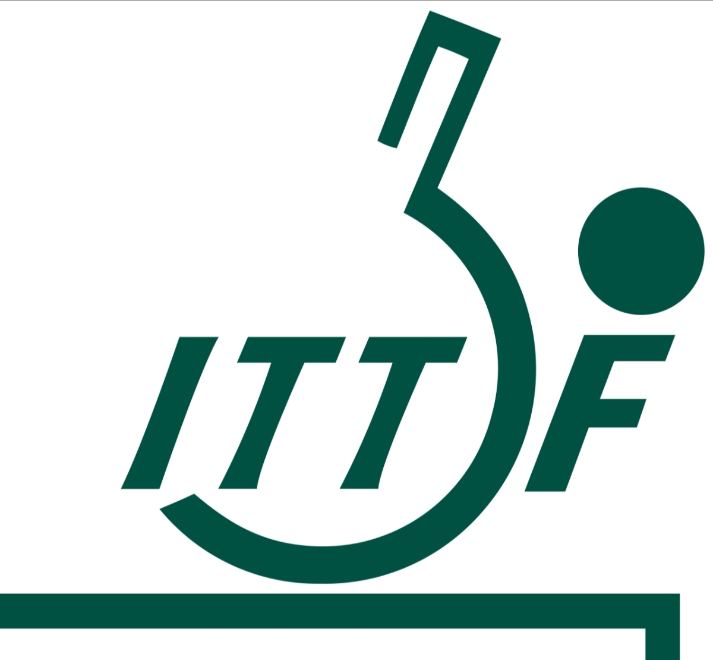

NEWS
Ukrainian Players compete in WTT Youth series.
Anthony Moore Elected President of ITTF-Oceania.
Tokyo medallists head ITTF SQY French Para Open 2022 start list

ITTF Approves Changes to World Ranking Regulations
Featured in ITTF Magazine: "Aida Dahlen, Abandoned to Admired
Registration for 2023 World Veteran Championships Now Open
INERNATIONAL TABLE TENNIS FEDERATION
The ITTF was founded in 1926 by William Henry Lawes from Wymondham, the nine founding members being Austria, Czechoslovakia, Denmark, England, Weimar Republic, Kingdom of Hungary, British India, Sweden and Wales.The first international tournament was held in January 1926 in Berlin while the first World Table Tennis Championships was held in December 1926 in London.
Toward the end of 2000, the ITTF instituted several rules changes aimed at making table tennis more viable as a televised spectator sport. The older 38 mm balls were officially replaced by 40 mm balls.This increased the ball's air resistance and effectively slowed down the game.
On 29 February 2008, the ITTF announced several rules changes after an ITTF Executive Meeting in Guangzhou, Guangdong, China with regards to a player's eligibility to play for a new association. The new ruling is to encourage associations to develop their own players.
The headquarters of the ITTF is in Lausanne, Switzerland. The previous president of the ITTF was Adham Sharara from Canada; the current president since 2021 is Petra Sorling from Sweden.
COMPETITIONS
- Major international events
- World Championships:Held every Odd-numbered year.
- Worled Team Championships:Held every Even-numbered year.
- Men's World Cup:Held every One year.
- Women's World Cup:Held every One year.
- Summer Olympic Games:Held every Four years.
- Summer Olympic Games:Held every Four years.
- World Team Cup:Held every Odd-numbered year.
- ITTF World Tour Grand Finals:Held every One year.
RANKS
ITTF Men's World Ranking, as of 22 March 2022
| Rank | Name | Country |
|---|---|---|
| 1 | Fan Zhendong | CHN |
| 2 | Ma Long | CHN |
| 3 | Liang Jingkun | CHN |
| 4 | Hugo Calderano | BRA |
| 5 | Tomokazu Harimoto | JPN |
| 6 | Lin Yun-ju | TPE |
| 7 | Dimitrij Ovtcharov | GER |
| 8 | Xu Xin | CHN |
| 9 | Timo Boll | GER |
| 10 | Lin Gaoyuan | CHN |
| 11 | Darko Jorgić | SLO |
| 12 | Wang Chuqin | CHN |
| 13 | Patrick Franziska | GER |
| 14 | Quadri Aruna | NGR |
| 15 | Truls Möregårdh | SWE |
| 16 | Liam Pitchford | ENG |
| 17 | Mattias Falck | SWE |
| 18 | Jeoung Young-sik | KOR |
| 19 | Jang Woo-jin | KOR |
| 20 | Simon Gauzy | FRA |
ITTF Men's World Ranking, as of 22 March 2022
| Rank | Name | Country |
|---|---|---|
| 1 | Chen Meng | CHN |
| 2 | Sun Yingsha | CHN |
| 3 | Wang Manyu | CHN |
| 4 | Mima Ito | JPN |
| 5 | Wang Yidi | CHN |
| 6 | Hina Hayata | JPN |
| 7 | Kasumi Ishikawa | JPN |
| 8 | Doo Hoi Kem | HKG |
| 9 | Adriana Díaz | PUR |
| 10 | Feng Tianwei | SGP |
| 11 | Jeon Ji-hee | KOR |
| 12 | Cheng I-Ching | TPE |
| 13 | Sofia Polcanova | AUT |
| 14 | Chen Xingtong | CHN |
| 15 | Miu Hirano | JPN |
| 16 | Liu Shiwen | CHN |
| 17 | Han Ying | GER |
| 18 | Zhu Yuling | CHN |
| 19 | Petrissa Solja | GER |
| 20 | Suh Hyo-won | KOR |